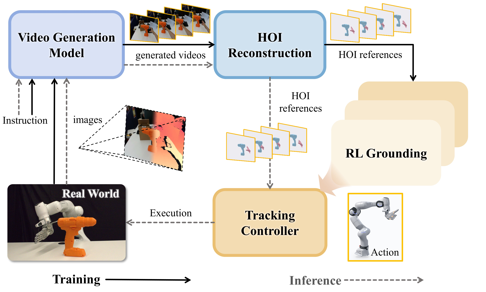
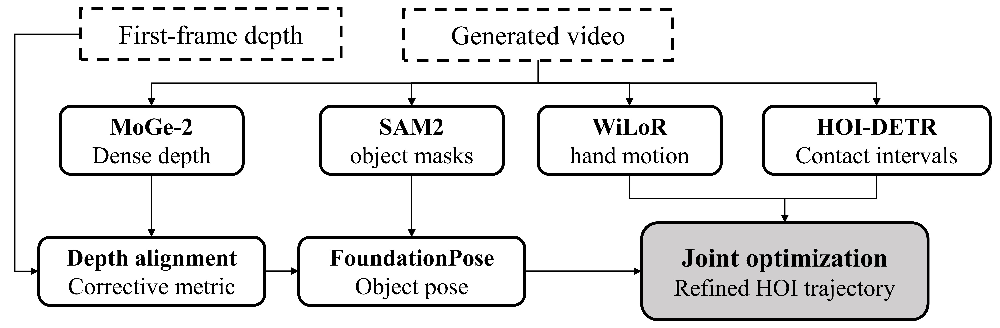
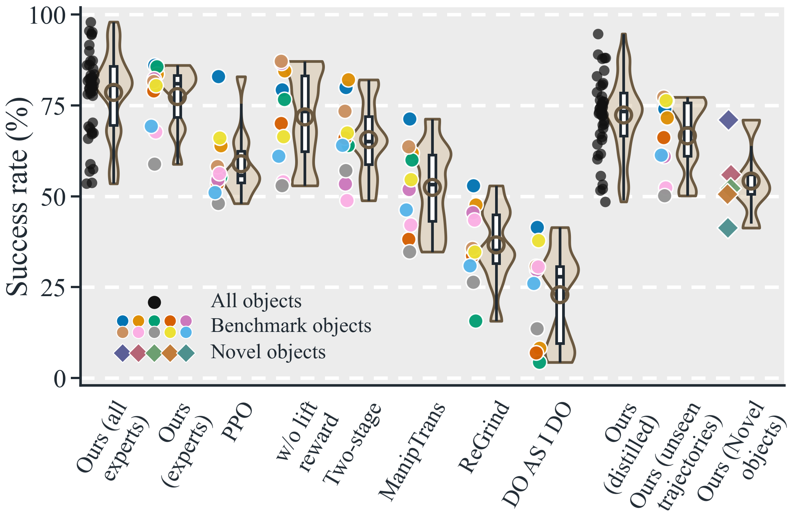

Loading execution…
HOI-DETRContact windowsPre-contact
Pre-contactContactPost-contact
Loading reconstruction…
GALATEA
Generated hand–object interaction videos provide a controllable way to propose manipulation motions. GALATEA combines generated videos with simulation-based HOI grounding: generated videos provide diverse motion references for learning a multi-object, multi-trajectory HOI tracker, and at deployment, video models produce motion plans executed by the learned tracker. HOI reconstruction with minimal manual intervention yields about 2,000 usable references from 2,500 generated clips; more than 1,500 trajectories are grounded in simulation. In closed-loop real-world experiments, the distilled controller performs functional grasps, non-prehensile manipulation, and post-grasp object-pose tracking.
Condition a video model on a real first-frame image and language instruction. Recover metric hand–object trajectories with stereo depth, object masks, hand tracking, and joint optimization.
Augment references while preserving contact, then train a tracking-style policy with contact-aware rewards, SAPG, and domain randomization.
Distill category experts with behavior cloning and DAgger into a single policy that transfers across objects and unseen trajectories.


Explore selected hand–object reconstruction examples. Choose an object to compare the generated video and method outputs in sync.
Grasp & move
Click a video to enlarge. Use the shared timeline to compare the same instant.
These examples showcase a subset of the objects and interactions in our dataset.
Scroll vertically inside the reel

Simulation success rates. Black circles, colored circles, and diamonds represent 42 training objects, 10 benchmark objects, and five novel objects; violins show distributions, boxes show interquartile ranges, and hollow circles show means. GALATEA experts lead the benchmark at 77.4% mean success, while the distilled controller reaches 54.2% mean success on novel objects without retraining. Higher is better.
@article{wu2026galatea,
title={Grounding Generated Video Plans in Simulation Towards Versatile Dexterous Controllers},
author={Wu, Tianyue and An, Boyuan and Zhao, Shuqi and Guo, Heyu and Xing, Wanli and Ma, Yi and Zhang, Kaifeng and Wu, Ruihai and Tomizuka, Masayoshi},
journal={arXiv preprint arXiv:2609.10050},
year={2026}
}